Stiahnutie inštalačného súboru
Návšteva java.sun.com
Navštívime stránku Sun-u (http://java.sun.com) a klikneme na odkaz Java SE v sekcii Popular Downloads:
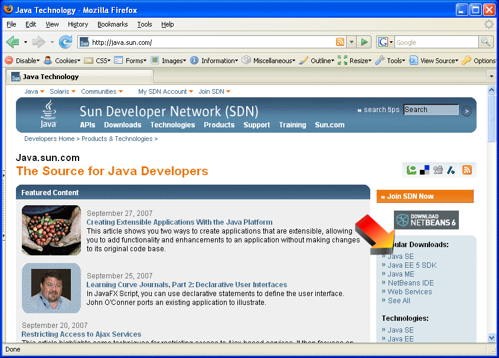
Výber správnej verzie
Nájdeme odkaz na JDK 6 a klikneme na Download
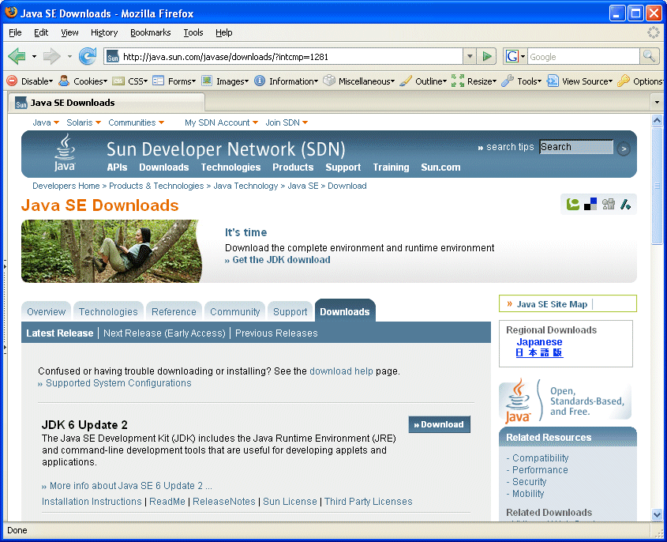
Odsúhlasenie licencie
Licenciu odsúhlasime kliknutím na Accept
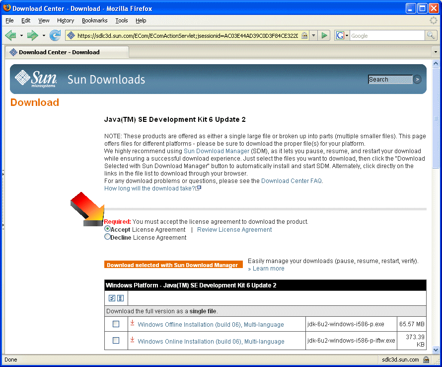
Výber operačného systému a typu inštalačného balíčka
V prípade Windowsu klikneme na odkaz Windows Offline Installation (alternatívnou možnosťou je minibalíček pre inštaláciu z Internetu)
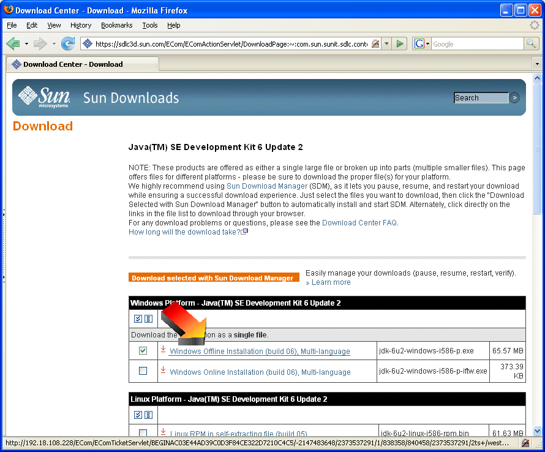
Uloženie inštalačného súboru
Ponúknutý inštalačný súbor stiahneme do vhodného adresára. a následne ho spustíme.
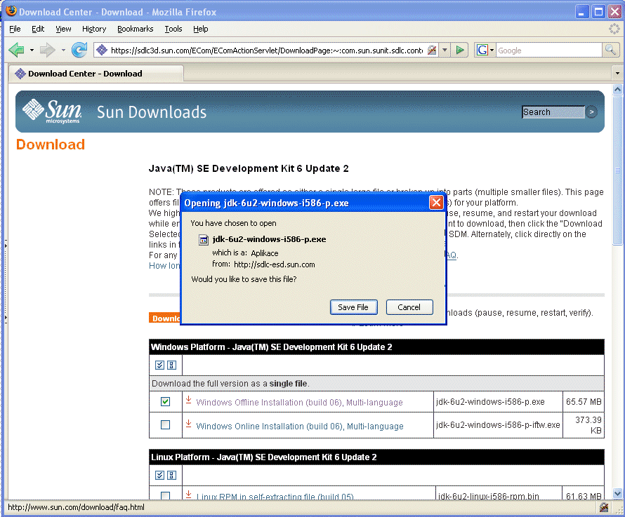
Spustenie a priebeh inštalácie
Najprv odsúhlasime licenčnú dohodu
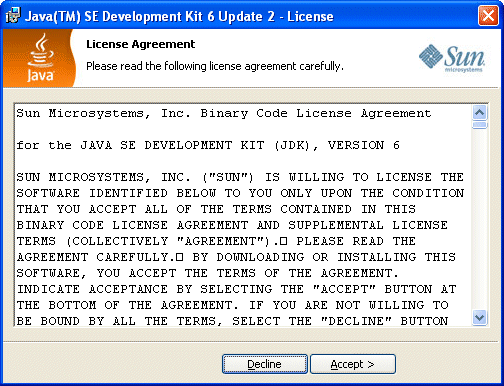
Výber komponentov pre inštaláciu
Zrejme budeme chcieť nainštalovať všetky súčasti inštalácie. Implicitne sa Java Development Kit nainštaluje do adresára C:\Program Files\Java\jdk*poradovéČísloVerzie*. Ak chceme zmeniť cieľový adresár, použijeme na to tlačidlo Change.
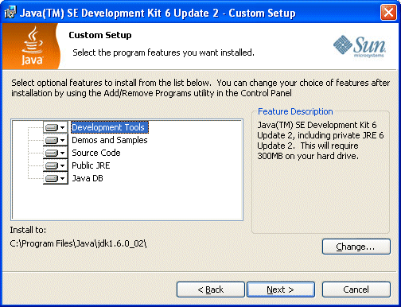
Priebeh inštalácie
Inštalátor začne kopírovať súbory
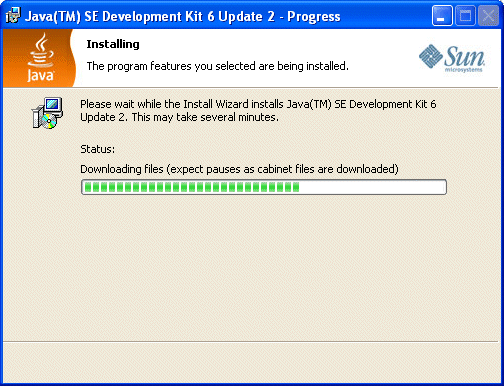
Koniec inštalácie
Po skončení kopírovania súborov si môžeme zobraziť informácie o vydaní (ak chceme). Inštaláciu ukončíme pomocou Finish.
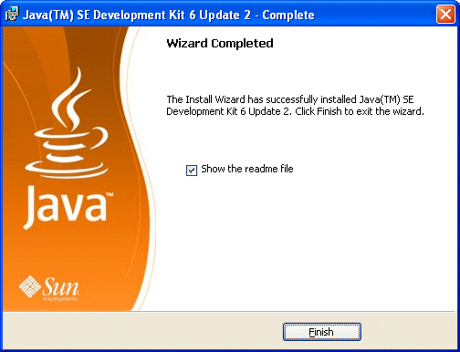
Kroky po inštalácii
Na uľahčenie práce s Javou z príkazového riadku si môžeme pridať príkazy javac.exe a java.exe do premennej prostredia PATH. Rovnako je vhodné definovať premennú prostredia JAVA_HOME, ktorá ukazuje do adresára, v ktorom je nainštalovaná Java.
Zobrazenie ovládacieho panelu
Zobrazíme si ovládací panel pre systém:
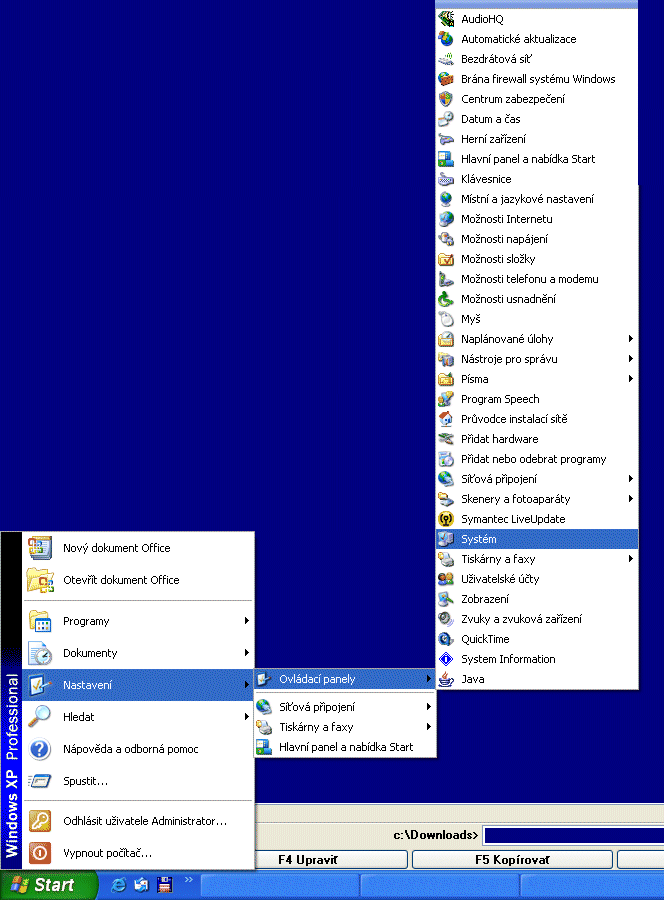
Vyberieme kartu Upresniť
Vyberieme kartu Upresniť a klikneme na tlačidlo Premenné prostredia
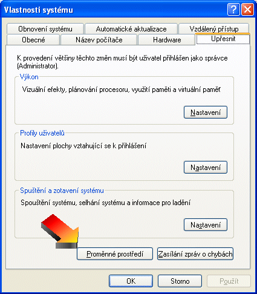
Pridanie premennej JAVA_HOME
V sekcii Systémové premenné klikneme na tlačidlo Nová.
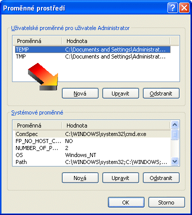
Názov premennej je JAVA_HOME a hodnotou je adresár, do ktorého bola nainštalovaná Java (napr. C:\Program Files\Java\jdk1.6.0_03).
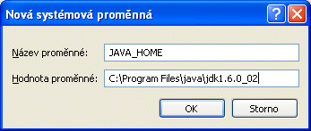
Úprava premennej PATH
V sekcii Systémové premenné vyberieme zo zoznamu premennú PATH a klikneme na tlačidlo Upraviť.
Na koniec hodnoty dodáme cestu k adresáru bin v adresári, v ktorom je nainštalovaná Java (napr. C:\Program Files\Java\jdk1.6.0_03\bin).
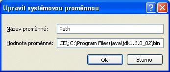
Otestovanie inštalácie
Pomocou Štart | Spustiť | cmd.exe si zobrazíme príkazový riadok. V ňom spustíme príkaz java.
C:\Documents and Settings\Administrator>java
Mal by sa nám zobraziť dlhší výpis
Usage: java [-options] class [args...]
(to execute a class)
or java [-options] -jar jarfile [args...]
(to execute a jar file)
...
V prípade, že získame hlásenie, že java nie je názvom spustiteľného súboru, prekontrolujeme nastavenie systémovej premennej PATH.